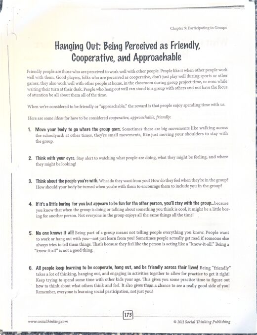
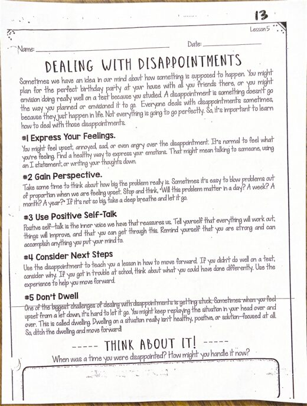
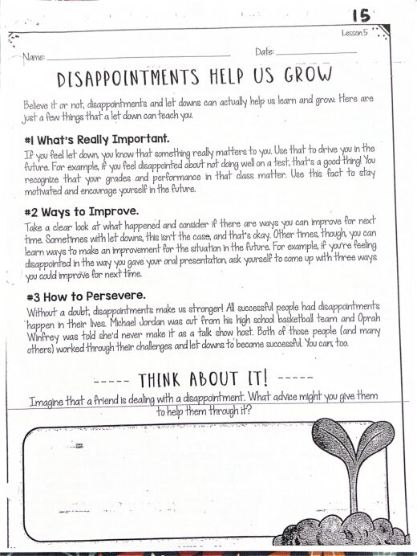
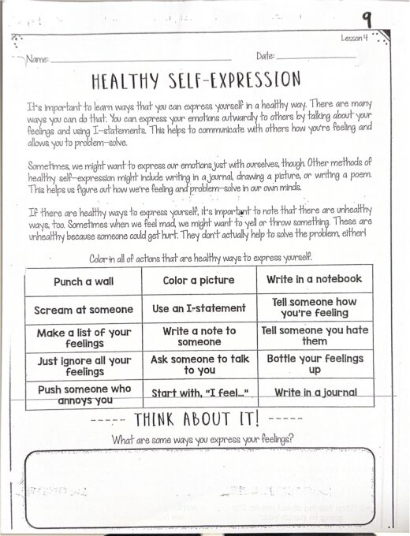
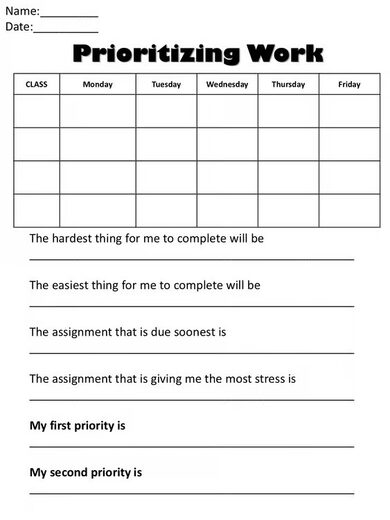
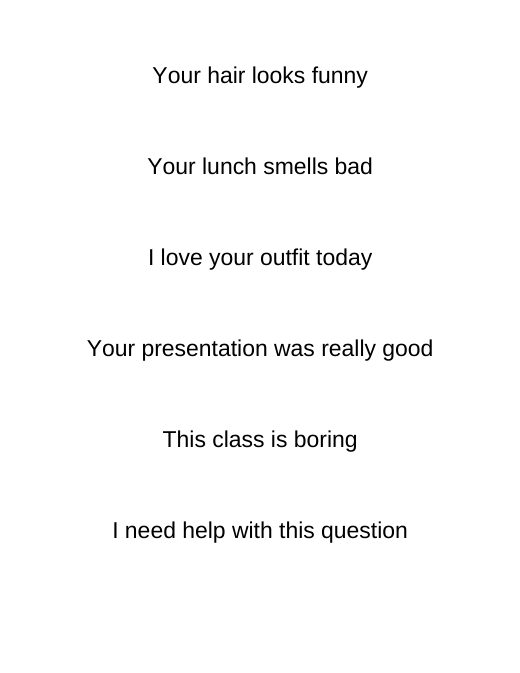

Grace Dittman
Block 2 Math
Block 3 Math
ESS
Lesson Plans
Résumé
Photos
Search
Home
›
ESS
›
weeks 8+9
›
Activities
Activities
Lesson Plans →

Participating in Groups (book chapter)
Chapter 9 Participating in Groups.pdf

Dealing with Disappointment
DealingWithDisappointment.pdf

Disappointments Help Us Grow
DisappointmentsHelpUsGrow.pdf

Healthy Self-Expression
HealthySelfExpression.pdf

Prioritizing Work Chart
Prioritizing Work .avif
source unknown

Think It or Say It? Cards
Think it Say it Cards.docx
Lesson Plans →